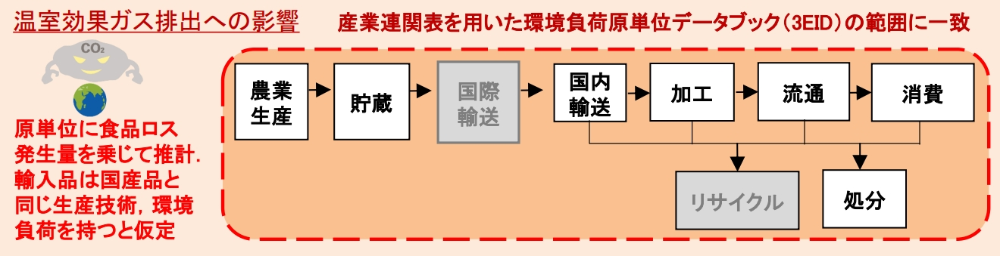
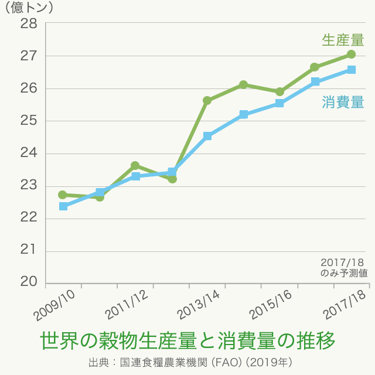

- −
- 現状から理解する私たちに求められている対策
- −
{kind=link}
- >
- 各国で行われているフードロス対策
肉を食べるには牧場が必要となり、パンを食べるには、農地が必要である。これらの場所を確保するには、人の住んでいない森林を伐採することになる。
そこで、生産したものの、食べなかった場合、生産するために準備した土地が無駄になる。
実際に、2015年の食品ロスによる土地資源の損失は116万haとなり、これは秋田県の面積と同じくらいである。
広大な森林が農耕地に変えられると生物多様性が失われることが考えられる。
資源というと、さまざまな種類があるが、特に水の資源に焦点を当てる。
水は、いろいろなところで活躍している。例えば、家畜や穀物の育成や、私たちが飲む飲料水などがあげられる。
2015年の食品ロスによる水資源の損失は474百万㎥となり、これは、黒部ダムの総貯水量の2.4倍である。
確かに、水が無駄になろうが、地球上全体の水の量は変わらないだろう。しかし、水といっても、ヒトが飲むことができる水は世界全体の水の内、わずか0.04％しかない。
つまり、食品ロスによる水資源の無駄は、私たちの生きるための水が少なくなることに繋がっている。
温室効果ガスはさまざまな場面で排出される。
例えば、生産、加工、運輸など、さまざまな場面で二酸化炭素が排出されている。実際に、2015年のフードロスによって排出された二酸化炭素の量は日本全体で排出された温室効果ガスの1.3％に相当する。
フードロスをするということは、その食べ物が私たちの手元に来るまでにかけられた二酸化炭素までもが無駄になるということである。
つまり、フードロスは出す必要のない二酸化炭素の排出に繋がっている。
経済的損失は、廃棄された商品によって計算される。
一家庭当たり3万円を超える額に値する。
この値の他にも、各家庭で廃棄物を捨てるコストであったり、自治体の処理費用であったりといった費用が掛かる。
このように、フードロスによって、経済的にデメリットがあることは明らかである。
現在、地球上では、10人に1人が飢餓に直面しているが、もし、余った食べ物を平等に分け与えるとすると、十分に飢餓の人を救うことができる。
その根拠として、毎年世界では、約26億トンの穀物が生産されていて、もしこれが世界に住む77億人に平等に分配されていれば、1人当たり年間340キログラム以上食べられることになる。日本人が実際に食べている穀物は、年間154キログラムである。
つまり、フードロスによって、救えたはずの人を救得られていないのである。
この問題は、直接的に私たちの生活につながるわけではないが、倫理的問題として、見過ごすわけにはいかない。